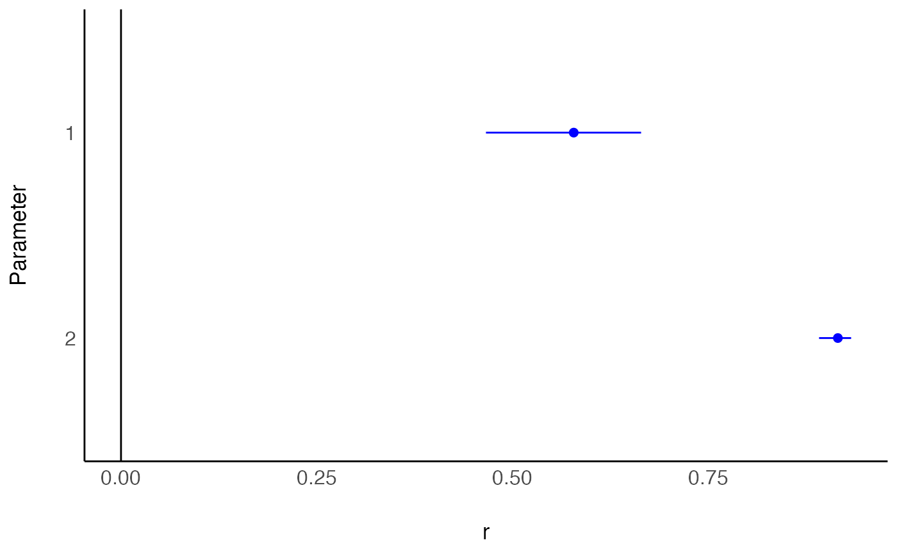

R/convert_tFz_to_d.R, R/convert_tFz_to_r.R
t_to_r.RdThese functions are convenience functions to convert t, z and F test
statistics to Cohen's d and partial r. These are useful in cases where
the data required to compute these are not easily available or their
computation is not straightforward (e.g., in liner mixed models, contrasts,
etc.).
See Effect Size from Test Statistics vignette.
t_to_d(t, df_error, paired = FALSE, ci = 0.95, pooled, ...) z_to_d(z, n, paired = FALSE, ci = 0.95, pooled, ...) F_to_d(f, df, df_error, paired = FALSE, ci = 0.95, ...) t_to_r(t, df_error, ci = 0.95, ...) z_to_r(z, n, ci = 0.95, ...) F_to_r(f, df, df_error, ci = 0.95, ...)
| t, f, z | The t, the F or the z statistics. |
|---|---|
| paired | Should the estimate account for the t-value being testing the difference between dependent means? |
| ci | Confidence Interval (CI) level |
| pooled | Deprecated. Use |
| ... | Arguments passed to or from other methods. |
| n | The number of observations (the sample size). |
| df, df_error | Degrees of freedom of numerator or of the error estimate (i.e., the residuals). |
A data frame with the effect size(s)(r or d), and their CIs
(CI_low and CI_high).
These functions use the following formulae to approximate r and d:
$$r_{partial} = t / \sqrt{t^2 + df_{error}}$$
$$r_{partial} = z / \sqrt{z^2 + N}$$
$$d = 2 * t / \sqrt{df_{error}}$$
$$d_z = t / \sqrt{df_{error}}$$
$$d = 2 * z / \sqrt{N}$$
The resulting d effect size is an approximation to Cohen's d, and
assumes two equal group sizes. When possible, it is advised to directly
estimate Cohen's d, with cohens_d(), emmeans::eff_size(), or similar
functions.
Unless stated otherwise, confidence intervals are estimated using the
Noncentrality parameter method; These methods searches for a the best
non-central parameters (ncps) of the noncentral t-, F- or Chi-squared
distribution for the desired tail-probabilities, and then convert these
ncps to the corresponding effect sizes. (See full effectsize-CIs for
more.)
Friedman, H. (1982). Simplified determinations of statistical power, magnitude of effect and research sample sizes. Educational and Psychological Measurement, 42(2), 521-526. doi: 10.1177/001316448204200214
Wolf, F. M. (1986). Meta-analysis: Quantitative methods for research synthesis (Vol. 59). Sage.
Rosenthal, R. (1994) Parametric measures of effect size. In H. Cooper and L.V. Hedges (Eds.). The handbook of research synthesis. New York: Russell Sage Foundation.
Steiger, J. H. (2004). Beyond the F test: Effect size confidence intervals and tests of close fit in the analysis of variance and contrast analysis. Psychological Methods, 9, 164-182.
Cumming, G., & Finch, S. (2001). A primer on the understanding, use, and calculation of confidence intervals that are based on central and noncentral distributions. Educational and Psychological Measurement, 61(4), 532-574.
Other effect size from test statistic:
F_to_eta2(),
chisq_to_phi()
## t Tests res <- t.test(1:10, y = c(7:20), var.equal = TRUE) t_to_d(t = res$statistic, res$parameter)#> d | 95% CI #> ---------------------- #> -2.19 | [-3.23, -1.12]t_to_r(t = res$statistic, res$parameter)#> r | 95% CI #> ---------------------- #> -0.74 | [-0.85, -0.49]res <- with(sleep, t.test(extra[group == 1], extra[group == 2], paired = TRUE)) t_to_d(t = res$statistic, res$parameter, paired = TRUE)#> d | 95% CI #> ---------------------- #> -1.35 | [-2.23, -0.44]t_to_r(t = res$statistic, res$parameter)#> r | 95% CI #> ---------------------- #> -0.80 | [-0.91, -0.40]# \donttest{ ## Linear Regression model <- lm(rating ~ complaints + critical, data = attitude) library(parameters) (param_tab <- parameters(model))#> Parameter | Coefficient | SE | 95% CI | t(27) | p #> ------------------------------------------------------------------- #> (Intercept) | 14.25 | 11.17 | [-8.67, 37.18] | 1.28 | 0.213 #> complaints | 0.75 | 0.10 | [ 0.55, 0.96] | 7.46 | < .001 #> critical | 1.91e-03 | 0.14 | [-0.28, 0.28] | 0.01 | 0.989(rs <- t_to_r(param_tab$t[2:3], param_tab$df_error[2:3]))#> r | 95% CI #> ------------------------ #> 0.82 | [ 0.67, 0.89] #> 2.70e-03 | [-0.35, 0.36]# How does this compare to actual partial correlations? if (require("correlation")) { correlation::correlation(attitude[, c(1, 2, 6)], partial = TRUE)[1:2, c(2, 3, 7, 8)] }#>#> Parameter2 | r | t(28) #> ----------------------------- #> complaints | 0.82 | 7.60 #> critical | 2.70e-03 | 0.01## Use with emmeans based contrasts (see also t_to_eta2) if (require(emmeans)) { warp.lm <- lm(breaks ~ wool * tension, data = warpbreaks) # Also see emmeans::eff_size() em_tension <- emmeans(warp.lm, ~tension) #' diff_tension <- summary(pairs(em_tension)) t_to_d(diff_tension$t.ratio, diff_tension$df) }#>#> d | 95% CI #> -------------------- #> 0.79 | [ 0.20, 1.38] #> 1.17 | [ 0.55, 1.77] #> 0.37 | [-0.20, 0.94]# }